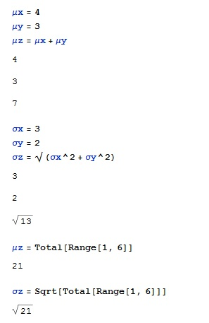

Definisjon:
μ=a1μ1+ ...+anμn
Hvis variansen er σ2 og σ12, ...,σn2, og variablene X1, ..., Xn er uavhengige så er
σ2=a12σ12+...+ a12σn2
Eksempel La oss se på en konkret oppgave:
Finn μZ, σZ når Z=X+Y, μX =4, σX=3, μY=-3, σY=2.
1. Skriv den gitte data og programmer funksjonen til μZ som
In[1]:=μX+μY
2. Samme for å finne σz men programmer funksjonen som
In[2]:= Esc sqrt Esc σX2+σY2
3. μZ
In[3]:=Total[Range[1, 6]]
4. Finn σZ
In[4]:=Sqrt[Total[Range[1, 6]]
